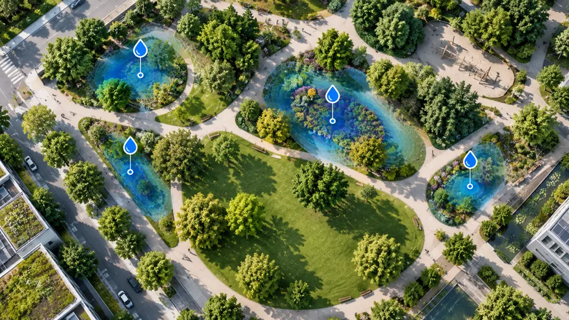

Experiment im Themenfeld Wasser
Welche Bäume und Beete brauchen diese Woche Wasser, und wie viel? Die Vorschau verrechnet Wettervorhersage, Standort und Vegetation zu einer Wasserbilanz pro Pflanzstandort und schlägt eine Gießtour vor.
Hinweis: Konzeptansicht mit Beispieldaten. Standorte, Bodenwerte und Wetter sind fiktiv und veranschaulichen nur die Methode.
| Reihenfolge | Standort | Bezirk | Fällig | Menge |
|---|
Jeder Standort hat einen Bodenwasserspeicher (nutzbare Feldkapazität, nFK in mm). Täglich kommt Regen hinzu – auf versiegelten Standorten versickert weniger – und die Pflanze verbraucht Wasser.
Speichermorgen = Speicher + Regen × Versickerung − ET₀ × Kc × Standortfaktor
ET₀ ist die Referenz-Verdunstung aus der Wettervorhersage, Kc der Pflanzenkoeffizient (z. B. Staudenbeet 1,0, Altbaum 0,7), der Standortfaktor bildet Hitzeinseln und Versiegelung ab.
Fällt der Speicher unter die Gießschwelle, wird auf 80 % aufgefüllt: Liter = mm × Gießfläche in m². Jungbäume in der Anwuchsphase (bis 3 Jahre) werden in der Tour vorgezogen.
Im echten Pilot kämen Vorhersagen vom DWD (Open Data), Standorte aus dem Baumkataster und optional Bodenfeuchtesensoren hinzu.